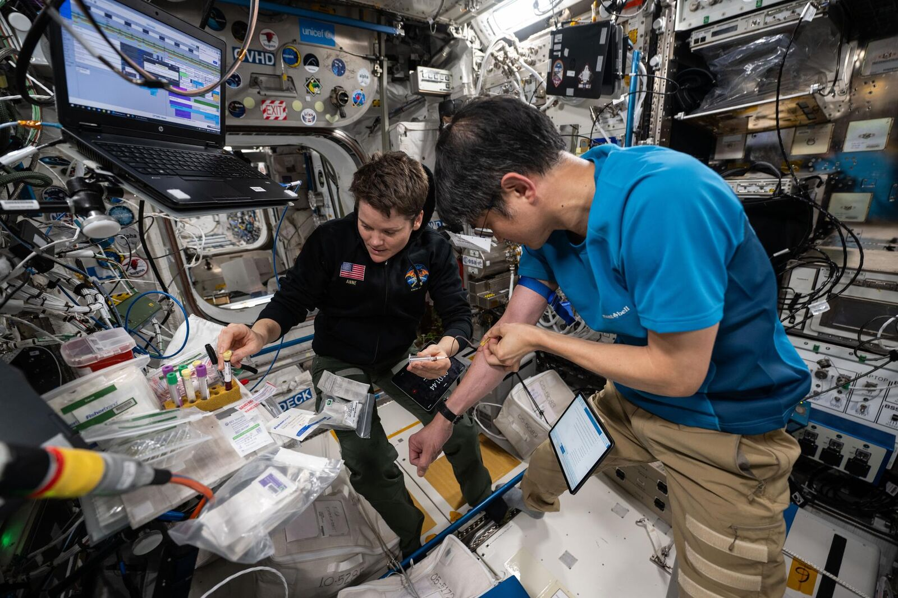

Blood draws, between experiments
Crews collect blood at set times during long missions. HEXTA keeps the original value and unit, the collection time and the processing delay, because a late analysis changes the result.5
Tracked: haemoglobin, haematocrit, lab status, corrections